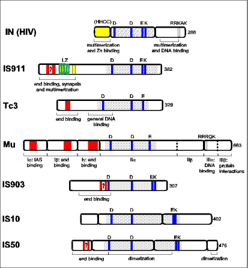

 |
Transposase organization.
The positions of protease sensitive sites are delimited by the open boxes. Potential or real helix-turn-helix (HTH) motifs are shown as red boxes. Potential HTH motifs are indicated by "?". The catalytic core is indicated by pale grey and carries the DDE motif indicated in blue. These residues are indicated in upper case letters above each transposase molecule. LZ indicates the leucine zipper motif with the four repeating heptads observed in the IS911 transposase. A second region involved in multimerisation is also shown slightly downstream. In those cases investigated, the catalytic core is also capable of promoting multimerisation. Known functions of the different transposase regions are indicated below. Transposase alignments are centered on the second aspartate residue. The length of each protein in amino acids is indicated at the right. The function of each region, where known, is indicated under the respective proteins
|